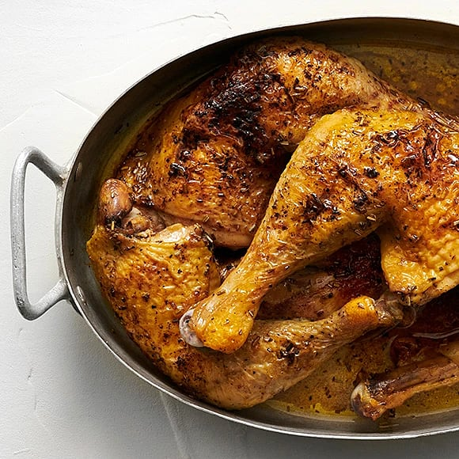

Baked Chicken Drumsticks

Baked Chicken Drumsticks
Cook crispy oven-baked chicken drumsticks seasoned with rosemary. Here is a basic recipe for oven-roasted chicken
drumsticks that you can serve with your favorite accessories, such as potatoes or rice. This recipe is part of
the Sunday prep where you prepare the basics for four meals through a little prep.
Ingredients for 8 portions
- 1.7kg of Chicken Drumsticks
- 75g of Butter
- 1tbs of Soy
- 1tbs dried Rosemary
- 1 1/2tsp of salt
- 1/2tsp pepper
- Set the oven to 225 ° C.
- Brown or melt the butter in a saucepan. Remove from the heat and stir in the soy sauce. Brush the chicken
with the butter and season with rosemary, salt and pepper.
- Place in the middle of the oven for about 20 minutes or until the inertia temperature is 82 ° C next to the
bone.
Back to homepage